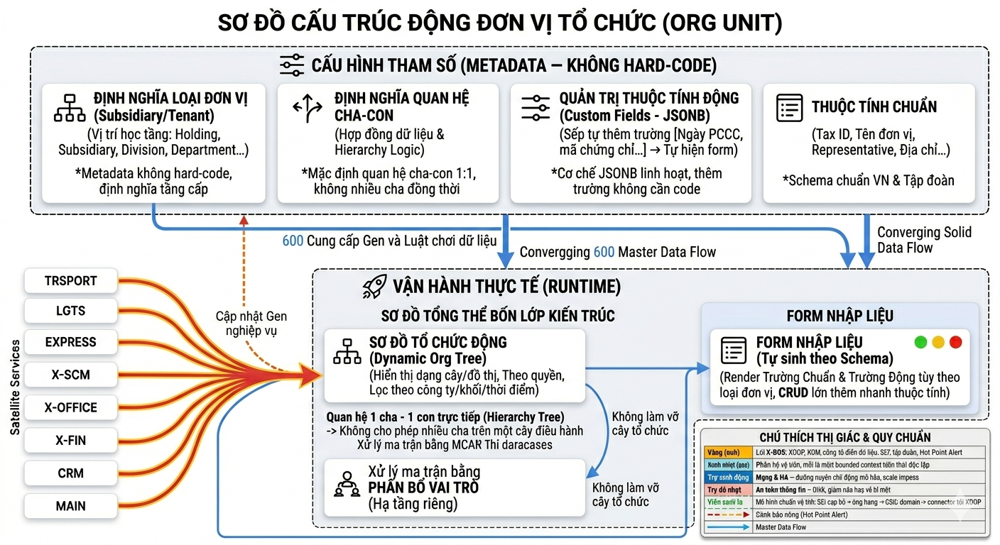
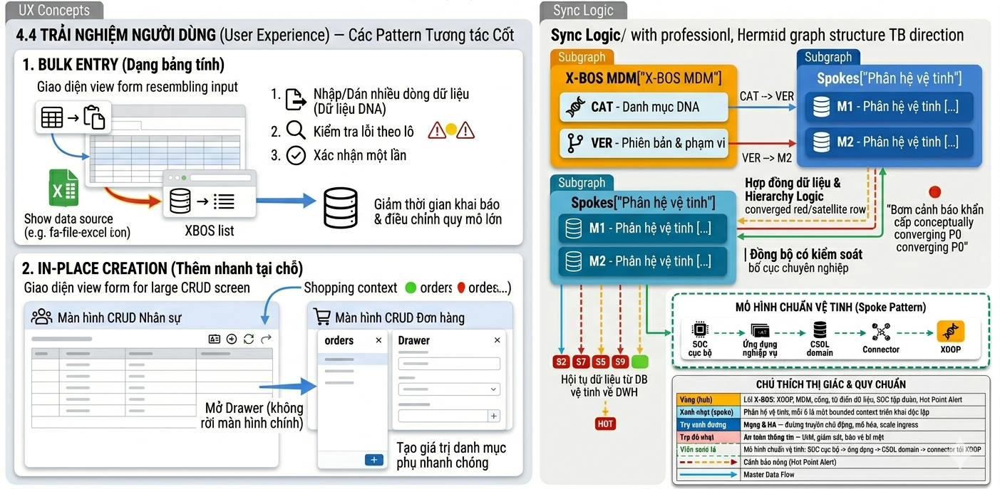

Tài liệu Yêu cầu Nghiệp vụ
Phân hệ X-BOS: lõi quản trị tập đoàn
| Thuộc tính | Giá trị |
|---|---|
| Sản phẩm | X-BOS |
| Hệ sinh thái | XeVN OS |
| Phiên bản tài liệu | 1.0 |
| Ngày | 2026-03-25 |
1. Tóm tắt điều hành
X-BOS là lõi điều phối của mô hình holding: không phải bộ chức năng “đóng khung” trong mã nguồn, mà là cỗ máy tự tiến hóa dựa trên Dynamic Engine — mọi cấu trúc dữ liệu chủ (thực thể tổ chức, danh mục, KPI, chính sách) đều có thể được khai báo và mở rộng mà không cần triển khai lại phần mềm cho từng thay đổi ngữ nghĩa nghiệp vụ.
Nền tảng kỹ thuật tham chiếu: mô hình thuộc tính mở rộng (EAV / metadata-driven) cho phép người dùng quản trị định nghĩa trường, kiểu dữ liệu, ràng buộc và biểu mẫu; hệ thống tự sinh giao diện nhập liệu và luồng xác thực theo cấu hình.
2. Phạm vi và ranh giới
| Trong phạm vi X-BOS | Ngoài phạm vi |
|---|---|
| Định nghĩa DNA tổ chức & danh mục dùng chung | Giao dịch vận hành theo domain |
| IAM tập trung, chính sách, KPI & ngưỡng tham chiếu | Tính toán KPI thực tế tại từng phân hệ |
| Workflow phê duyệt cấp tập đoàn | Quy trình nghiệp vụ thuần túy tại từng vệ tinh |
| Nhật ký kiểm toán cấu hình & phát hành phiên bản | Nhật ký giao dịch chi tiết tại OLTP từng phân hệ |
2.1 Kiến trúc tổng thể X-BOS Core & luồng chính
2.1.1 Triết lý Hub-and-Spoke và vị trí X-BOS
X-BOS Core là Holding Core / Hub theo mô hình Hub-and-Spoke:
- Hub (X-BOS): là nơi phát hành và quản trị “DNA vận hành” của tập đoàn (Org schema, Custom Fields schema, Master Data categories, KPI/Policy thresholds, và chính sách governance).
- Spoke (vệ tinh nghiệp vụ): HRM, TRSPORT, LGTS, EXPRESS, X-SCM, X-OFFICE, X-FINANCE, CRM, X-MAINTENANCE… vận hành giao dịch theo domain nhưng không tự quyết định cấu trúc dữ liệu master.
- Presentation phía trên: Web Portal (và các kênh khác như Mobile App) tiêu thụ schema/contract từ X-BOS để render đúng màn hình theo thời điểm phiên bản đang hoạt động.
Hệ quả quan trọng về sản phẩm: Portal và các vệ tinh luôn nhìn “cùng một ngôn ngữ dữ liệu”, vì contract schema/metadata được X-BOS phát hành theo version.
2.1.2 System Landscape

2.1.3 Bản đồ API Contract
X-BOS phát hành hợp đồng dữ liệu (DNA/Schema Contract) và API được Portal/Spoke tiêu thụ theo version:
- Org schema & org chart:
GET /org-units/tree(đọc cây, render nhanh)GET /org-units/{id}(đọc node + custom fields)POST /org-units(tạo node; validate cha–con; chống cycle)PATCH /org-units/{id}(cập nhật node + custom values)
- Metadata (custom fields schema):
GET /metadata/attributes?entityType=org_unitPOST /metadata/attributes(thêm trường động)PATCH /metadata/attributes/{id}(cập nhật cấu hình trường)GET /metadata/contract?schemaVersion=...(đóng gói contract để cache/invalidate)
- MDM DNA contract (categories):
GET /dna/contract?tenantId=...(trả về categories theo phạm vi)POST /category-items/bulk-upsert(bulk nhập giá trị)POST /category-items/DELETE /category-items/{id}(CRUD giá trị)
- Governance & Audit:
POST /governance/workflows/{workflowId}/start(khởi chạy workflow phê duyệt)GET /audit?entityType=...&entityId=...(truy vết cấu hình)POST /version/publish(publish bản version sau duyệt)
- Hot Point Alert:
POST /alerts/violation-ingest(ingest sự kiện từ vệ tinh)GET /alerts/hot-point(Portal Cockpit đọc)
2.1.4 Luồng chính
A) Cập nhật danh mục DNA
Mục tiêu: khi X-BOS publish phiên bản categories mới, Portal và các vệ tinh tự cập nhật dropdown/select mà không cần đổi code.
Luật sản phẩm: mỗi contract trả về schemaVersion và publishedAt; client cache theo version và chỉ invalid khi version thay đổi.
B) Metadata Publishing
Mục tiêu: khi quản trị thêm trường động cho org_unit, Portal/Org form cập nhật ngay theo schema version mới.
Chi tiết kiểm soát dữ liệu: trường dataType=select phải có “nguồn lựa chọn” (refCategoryCode hoặc optionsJson). dataType=boolean không cần options list; chỉ cần nhãn bật/tắt và ràng buộc required (nếu có).
C) Dynamic Org Engine
Mục tiêu: Portal hiển thị org chart tức thời và đảm bảo dữ liệu tổ chức luôn hợp lệ theo quan hệ cha–con 1:1.
D) Real-time Alerting Flow (vi phạm → Hot Point Alert trên Dashboard)
Mục tiêu: các vi phạm/threshold breach tại vệ tinh hội tụ về một điểm điều hành duy nhất (Hot Point Alert), giúp Cockpit ra quyết định nhanh.
Payload chuẩn hóa (bắt buộc có): tenantId, moduleCode, entityRef (ví dụ orgUnitId), ruleId, severity, metricSnapshot, occurredAt, correlationId.
E) Governance & Audit
Mục tiêu: mọi thay đổi cấu hình nhạy cảm (metadata/schema/contract/policy) có vết kiểm toán và có thể rollback bằng version.
2.1.5 Liên kết với Portal
Portal không tự dựng schema tĩnh. Portal chỉ:
- Đọc schema/contract từ X-BOS trước khi render form/bảng dropdown.
- Hiển thị org chart bằng dữ liệu cây lấy từ X-BOS.
- Đọc Hot Point Alert theo thời gian thực/near-real-time để hỗ trợ quyết định.
Để đảm bảo “logic liên kết trong chính phần mềm”, Portal cần tuân thủ:
- Tất cả màn hình có dropdown/select từ DNA phải gọi contract version của X-BOS, không dùng danh sách hard-code.
- Các màn hình “tạo/sửa đơn vị” phải dùng Dynamic Form renderer dựa trên metadata schema contract.
- Mỗi thay đổi cấu hình có publish version; client cache chỉ sống tới
publishedAttương ứng.
2.1.6 Liên kết với các kênh/ứng dụng khác
Ngoài Web Portal, X-BOS Core tiếp tục đóng vai trò hub contract cho các kênh và hệ thống sau:
- Mobile App / Kiosk / App hiện trường: tiêu thụ
metadata/contractvàdna/contracttheoschemaVersionđể render form & dropdown đồng nhất; không phát sinh logic tạo field/danh mục “tự thân”. - Satellite Services (vệ tinh nghiệp vụ): dùng contract để chuẩn hóa biểu mẫu tham chiếu (orgId, categoryCode, customAttributes) và phát sự kiện vi phạm/threshold breach về
POST /alerts/violation-ingestđể hội tụ Hot Point Alert. - ETL / Analytics / Data Warehouse: tiêu thụ event stream (org change, category publish, policy publish, alert snapshot) để xây dựng lớp báo cáo theo “thời điểm version”; phục vụ truy vết khi đối chiếu số liệu.
- B2B/đối tác tích hợp (nếu có): truy cập qua API Gateway với contract dạng read-only (categories, org chart, policy snapshots) theo scope, tránh phụ thuộc vào schema nội bộ.
Nguyên tắc ràng buộc: mọi kênh chỉ cache tới publishedAt/schemaVersion do X-BOS công bố; khi X-BOS publish version mới thì invalidate theo version đó.
2.1.7 Contract cho event/payload
Trong triển khai enterprise, dev thường bị kẹt ở chỗ: “event/payload phải chứa trường nào để server/analytics render đúng?”. Vì vậy X-BOS Core cần cố định contract cho các luồng dữ liệu trọng yếu dưới dạng JSON contract (schema) và ví dụ payload thực thi.
A) Violation Event
Endpoint tham chiếu: POST /alerts/violation-ingest
Contract tối thiểu (bắt buộc có):
tenantId(string/UUID): phạm vi holdingmoduleCode(string): mã phân hệ phát sự kiện (TRSPORT/LGTS/…)occurredAt(ISO datetime): thời điểm xảy ra tại hệ vệ tinh (UTC trước khi lưu)entityRef(object): tham chiếu thực thể liên quan (ví dụorgUnitId,routeId,vehicleId…)ruleId(string): định danh rule/định mức/phép tính tạo vi phạmseverity(low|medium|high|critical)metricSnapshot(object): dữ liệu đo tại thời điểm vi phạm (giá trị thực, ngưỡng, đơn vị…)correlationId(string): id tương quan trace xuyên suốt
Ví dụ payload:
{
"tenantId": "tenant-xevn-holding",
"moduleCode": "TRSPORT",
"occurredAt": "2026-03-25T09:15:00Z",
"entityRef": {
"orgUnitId": "org-logistics",
"routeId": "route-12"
},
"ruleId": "TRSPORT_FILL_RATE_MIN",
"severity": "high",
"metricSnapshot": {
"metricCode": "fill_rate",
"value": 0.62,
"unit": "%",
"threshold": 0.7
},
"correlationId": "trsport-2026-03-25T09:15:00Z-8f1c"
}
Quy tắc chuẩn hóa server (bắt buộc áp dụng):
occurredAtluôn được parse về UTC trước khi lưu snapshotruleIdphải map được tới định danh rule trong KPI/Policy catalog của X-BOS (nếu không map → ghi log “unknown rule”, vẫn lưu event nhưng giảm ưu tiên hiển thị)severitylà rule-driven (không lấy từ client)
B) Hot Point Alert Snapshot
Endpoint tham chiếu: GET /alerts/hot-point
Contract snapshot tối thiểu:
hotPointId(string)tenantIdmoduleCodes(string[])createdAt(ISO)summary(string): tóm tắt dạng câu ngắn cho người dùngranking(number): điểm ưu tiên (severity + recency + impact weight)items(array): danh sách violation/event thành phần (có thể giới hạn theolimit)
Ví dụ snapshot:
{
"hotPointId": "hp-2026-03-25-TRSPORT-1",
"tenantId": "tenant-xevn-holding",
"moduleCodes": ["TRSPORT", "LGTS"],
"createdAt": "2026-03-25T09:18:42Z",
"summary": "Tỷ lệ lấp đầy tuyến HU-01 giảm dưới ngưỡng 0.7",
"ranking": 98.4,
"items": [
{
"correlationId": "trsport-2026-03-25T09:15:00Z-8f1c",
"entityRef": { "orgUnitId": "org-logistics", "routeId": "route-12" },
"severity": "high",
"occurredAt": "2026-03-25T09:15:00Z"
}
]
}
C) Version Publish Contract & Audit Event (Workflow → Publisher)
Mục tiêu: mọi thay đổi cấu hình nhạy cảm đều phải có thể truy vết và rollback theo version.
Contract “publish” tối thiểu:
{
"tenantId": "tenant-xevn-holding",
"artifactType": "metadata|category|policy|org-schema",
"artifactKey": "org_unit",
"previousVersion": 16,
"newVersion": 17,
"publishedAt": "2026-03-25T10:00:00Z",
"publisher": { "actorType": "user|service", "actorId": "admin-001" },
"correlationId": "publish-org_unit-17-20260325T1000Z"
}
Ràng buộc audit:
- Trước publish: tạo draft version + diff snapshot
- Khi approve: commit publish + ghi diff vào
audit_log - Khi reject: không publish
D) Contract cache keys
dna:contract:{tenantId}:{artifactKey}:{schemaVersion}metadata:contract:{tenantId}:{entityType}:{schemaVersion}alerts:hotpoint-snapshot:{tenantId}:{dayBucket}
Invalidation duy nhất theo: publish version mới → invalidate theo schemaVersion cũ (hoặc tăng version key).
3. Trình quản trị thực thể tổ chức động
3.1 Mục tiêu nghiệp vụ
Cho phép khai báo và duy trì cây tổ chức đa tầng phản ánh đúng pháp lý và vận hành holding: Công ty mẹ (Holding) → Công ty con → Khối / Phân hệ nội bộ → Phòng ban (và các tầng mở rộng theo chính sách nội bộ), với khả năng mở rộng thuộc tính mà không sửa mã.
3.2 Cấu trúc đa tầng & logic quan hệ
- Thực thể gốc: Đơn vị tổ chức (Org Unit) là nút trong sơ đồ; mỗi nút thuộc một loại tầng (ví dụ: Holding, Subsidiary, Division, Department) được định nghĩa trong metadata — không cố định cứng trong code.
- Quan hệ cha–con: Mặc định 1 cha – 1 con trực tiếp trên một nhánh (cây phân cấp); không cho phép một nút có nhiều cha đồng thời trong cùng một cây điều hành (tránh xung đột báo cáo). Trường hợp ma trận (nhân sự kiêm nhiệm) xử lý ở lớp phân bổ vai trò, không làm “vỡ” cây tổ chức.
- Org Chart: Hiển thị dạng cây (tree) và sơ đồ (graph read-only) theo quyền; hỗ trợ lọc theo công ty / khối / thời điểm hiệu lực.

3.3 Trường dữ liệu chuẩn
Áp dụng cho mỗi đơn vị, tối thiểu các nhóm:
| Nhóm | Ví dụ trường |
|---|---|
| Định danh | Mã đơn vị, tên đầy đủ, tên viết tắt |
| Pháp lý | Mã số thuế, người đại diện pháp luật, giấy phép kinh doanh |
| Địa lý | Địa chỉ trụ sở, mã bưu chính, quốc gia / tỉnh |
| Tài chính | Vốn điều lệ, tỷ lệ sở hữu, niên độ tài chính |
| Hiệu lực | Ngày hiệu lực / ngày kết thúc, trạng thái |
Các trường chuẩn được định nghĩa trong schema phiên bản hóa; thay đổi nhãn / bắt buộc / validation do quản trị cấu hình trong phạm vi quyền.
3.4 Custom Fields & form động
- Người dùng được phép thêm trường gắn với loại thực thể (hoặc với từng loại Org Unit): Text, Number, Date, Boolean, và mở rộng Select (tham chiếu danh mục DNA).
- Không yêu cầu release mới khi thêm trường: engine đọc metadata và render lại form, bảng danh sách và API (theo hợp đồng phiên bản).
- Ràng buộc: giới hạn độ dài, định dạng, bắt buộc / tùy chọn, điều kiện hiển thị theo rule khai báo.
4. Danh mục DNA
4.1 Vai trò
X-BOS là nguồn phát hành danh mục dùng chung (DNA): loại xe, tuyến, cấp bậc, chức vụ, loại chi phí… — được định danh, phiên bản hóa và phân vùng phạm vi sử dụng.
4.2 Cơ chế “bơm” dữ liệu xuống vệ tinh
- Mỗi danh mục có mã, kiểu giá trị, trạng thái, phiên bản schema và danh sách giá trị (hoặc tham chiếu động).
- Vệ tinh không tự tạo nguồn master trùng nghĩa; chúng đồng bộ qua API / sự kiện theo hợp đồng (pull theo version, push delta, hoặc webhook — chi tiết kỹ thuật ở tài liệu tích hợp).
4.3 Phạm vi áp dụng
| Phạm vi | Mô tả |
|---|---|
| Toàn tập đoàn | Danh mục áp dụng đồng nhất cho mọi pháp nhân trong holding |
| Theo công ty con | Chỉ hiệu lực trong phạm vi một hoặc nhiều đơn vị được chọn |
| Kết hợp | Danh mục “khung” toàn nhóm + giá trị “lá” theo công ty |
4.4 Trải nghiệm người dùng
- Bulk Entry (dạng bảng tính): Nhập / dán nhiều dòng danh mục cùng lúc, kiểm tra lỗi theo lô, xác nhận một lần — giảm thời gian khai báo đầu kỳ và đợt chỉnh quy mô lớn.
- In-place Creation (thêm nhanh tại chỗ): Tại màn hình CRUD lớn (ví dụ nhân sự, đơn hàng tham chiếu danh mục), mở Drawer để tạo nhanh giá trị danh mục phụ mà không rời luồng chính; sau khi lưu, giá trị mới xuất hiện ngay trong dropdown / lookup.

5. Quản trị KPI & chính sách
5.1 Tham số hóa
- KPI: Định nghĩa tên, nhóm, loại giá trị KPI (để hiểu đúng đơn vị), đơn vị đo, tần suất, chủ sở hữu, công thức tham chiếu (tùy chọn) (biểu thức hoặc tham chiếu engine tính toán — chi tiết LLD), ngưỡng cảnh báo.
- Chính sách: Tham số điều kiện (ví dụ định mức tiêu hao, mức chiết khấu, hạn mức) gắn phạm vi áp dụng (tập đoàn / công ty / phân hệ) và quy định thưởng/phạt theo khoảng mức (có thể gồm nhiều hình thức phạt).
- Gán KPI theo tổ chức: cấu hình KPI áp dụng cho nhân sự theo từng kỳ, theo chuỗi giao việc trên cây tổ chức; khi gán tại một node org thì áp dụng cho toàn bộ nhân sự thuộc nhánh (theo dõi tới từng cá nhân).
5.2 Versioning & hiệu lực
- Mọi thay đổi chính sách / công thức / ngưỡng tạo phiên bản mới (v1 → v2), kèm khoảng thời gian hiệu lực và lý do / phê duyệt (nếu bật workflow).
- Truy vấn lịch sử: ai tạo, ai sửa, trạng thái duyệt, diff tham số — phục vụ kiểm toán và điều tra sai lệch.
5.3 Hội tụ cảnh báo
- Vệ tinh phát sự kiện vi phạm (ngưỡng KPI, định mức, SLA) theo chuẩn định danh.
- X-BOS tổng hợp, khử trùng, xếp hạng và đẩy lên Hot Point Alert trên dashboard tập đoàn — một điểm nhìn cho lãnh đạo, không phải từng console rời.
6. Quản trị, audit và quyền truy cập
6.1 Workflow Designer
- Trình thiết kế quy trình ký duyệt tập trung cho các thay đổi cấu hình nhạy cảm: danh mục DNA, ngưỡng KPI, phân quyền, cấu trúc tổ chức.
- Hỗ trợ bước duyệt, phân nhánh, ủy quyền, SLA bước; tích hợp với nhật ký và phiên bản (chỉ cam kết khi duyệt xong — tùy cấu hình).
6.2 Audit Trail
Ghi nhận tối thiểu:
| Thành phần | Nội dung ghi |
|---|---|
| Ai | Định danh người / dịch vụ / API key |
| Làm gì | Loại thao tác |
| Trên đâu | Thực thể, khóa logic, phiên bản |
| Khi nào | Timestamp chuẩn, timezone tập đoàn |
| Giá trị | Before / after |
Mục tiêu: truy vết gen cấu hình — mọi thay đổi “DNA” đều có vết.
6.3 Central IAM & SSO
- Một đăng nhập (OIDC / OAuth2) cho toàn hệ sinh thái; JWT / session có tenant, role, scope API.
- Ma trận quyền tập trung cho người dùng và nhóm, map tới 10 phân hệ vệ tinh + X-BOS: menu, thao tác, dữ liệu theo phạm vi tổ chức.
- Chính sách mật khẩu, MFA, khóa phiên — thống nhất tại lõi.
7. Tiêu chuẩn UI/UX
| Nguyên tắc | Thể hiện |
|---|---|
| Tối giản | Typography rõ cấp bậc, ít họa tiết; một hành động chính rõ ràng mỗi màn |
| Layering | Shadow mềm, tách lớp card / drawer / modal; backdrop blur cho ngữ cảnh phụ |
| Mật độ thông tin | Bảng sâu có sticky header, cột cố định, tóm tắt dòng; tree-view cho org và danh mục phân cấp |
| Nhất quán | Design system dùng chung token; form động vẫn tuân layout grid và trạng thái lỗi thống nhất |
| Hiệu năng cảm nhận | Skeleton, progressive disclosure, tách bước khai báo phức tạp |
8. Ma trận truy vết yêu cầu
| Nhóm BRD | Thành phần cốt lõi | Ghi chú |
|---|---|---|
| Org động | EAV, cây cha-con, form sinh tự động | Không hard-code tầng tổ chức |
| MDM DNA | Phạm vi toàn nhóm / theo công ty, bulk, in-place | Đồng bộ xuống vệ tinh có contract |
| KPI & Policy | Công thức, ngưỡng, versioning | Hot Point là đích hội tụ cảnh báo |
| Governance | Workflow, audit, IAM | Kiểm soát thay đổi gen |
9. Điều kiện chấp nhận
- Quản trị có thể thêm trường tùy chỉnh và thấy form cập nhật mà không cần build mới từ đội phát triển ứng dụng cho từng trường đơn lẻ.
- Danh mục DNA có phạm vi và phiên bản; vệ tinh nhận đồng bộ theo số hiệu phiên bản đã thỏa thuận.
- Thay đổi chính sách / KPI tạo version mới và lịch sử hiệu lực; có thể gắn workflow phê duyệt.
- Mọi thao tác cấu hình trọng yếu ghi audit trail đủ mức điều tra.
- IAM & SSO phục vụ toàn bộ phân hệ trong lộ trình XeVN OS.
Tài liệu này là baseline BRD cho X-BOS Dynamic Core; chi tiết màn hình, API contract và lược đồ vật lý nằm ở PRD/LLD và tài liệu tích hợp từng vệ tinh.